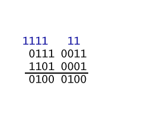
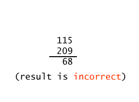
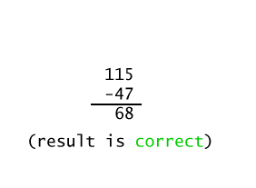

First note that the "sign bit" is set, so the integer is negative. Then find the positive integer: 1001 1111 reflect → 0110 0000 add one → 0110 0001
convert to decimal → 26 +25 + 1 = 9710
put sign in front → -9710
The binary addition algorithm can be applied to any pair of bit patterns. The electronics inside the microprocessor performs this operation with any two bit patterns you send it. You send it bit patterns. It does its job. It is up to you (as the writer of the program) to be sure that the operation makes sense.
Overflow is detected in a different way for each representation scheme. In the following exhibit the binary addition algorithm is applied to two bit patterns. Then the results are looked at as unsigned binary and then as two's complement:
| Algorithm applied to bit patterns |
Interpretation of the patterns as unsigned binary (shown in base 10) |
Interpretation of the patterns as 2's complement (shown in base 10) |
|---|---|---|
|  |  |  |
The binary addition algorithm was performed on the operands. The result is either correct or incorrect depending on how the bit patterns are interpreted. If the bit patterns are regarded as unsigned binary integers, then overflow happened. If the bit patterns are regarded as two's comp integers, then the result is correct.
| Correct Two's Complement Addition |
|---|
|
When the binary addition algorithm is used with operands in two's complement representation: The result is correct if the carry INTO the high order column equals the carry OUT OF the high order column.
The carry bits can both be zero or both be one. |
If the bit patterns in the above addition problem are regarded as two's complement, is the result correct?